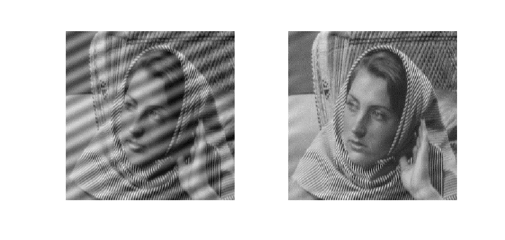

Contents
Q3. Notch Filter
Author: Dhruv Ilesh Shah
close all load('data/image_low_frequency_noise.mat');
Log-plot of the Fourier Transform
Fimg = fft2(Z); Fimg_shifted = fftshift(Fimg); Flog = log(abs(Fimg_shifted)); figure, imagesc(Flog)

Identifying Noise
For this part, we run impixelinfo on the log-Fourier of the image and notice two abnormal peaks as shown below
noisy_f = [124, 119; 134, 139]; % Observed
viscircles(noisy_f, [5; 5]);

Ideal Notch Filter
We see that the noise frequencies are almost pure (single-pixel) impulses, and we use an ideal cross-hair notch of pixel-size 2-3
noisy_sub = sub2ind(size(Fimg_shifted), noisy_f(:, 2), noisy_f(:, 1)); notch_filter = ones(size(Fimg_shifted)); notch_filter(noisy_sub) = 0; se = strel('disk', 1, 4); notch_filter = imerode(notch_filter, se); notch_filter = imerode(notch_filter, se); notch_filter = imerode(notch_filter, se); % A simple trick to circular notch Fimg_rec = Fimg_shifted.*notch_filter; % Setting the noisy frequencies to zero img_rec = ifft2(ifftshift(Fimg_rec)); figure('Position', [100, 100, 1000, 500]) subplot(1, 2, 1), imshow(mat2gray(Z)); subplot(1, 2, 2), imshow(mat2gray(img_rec));